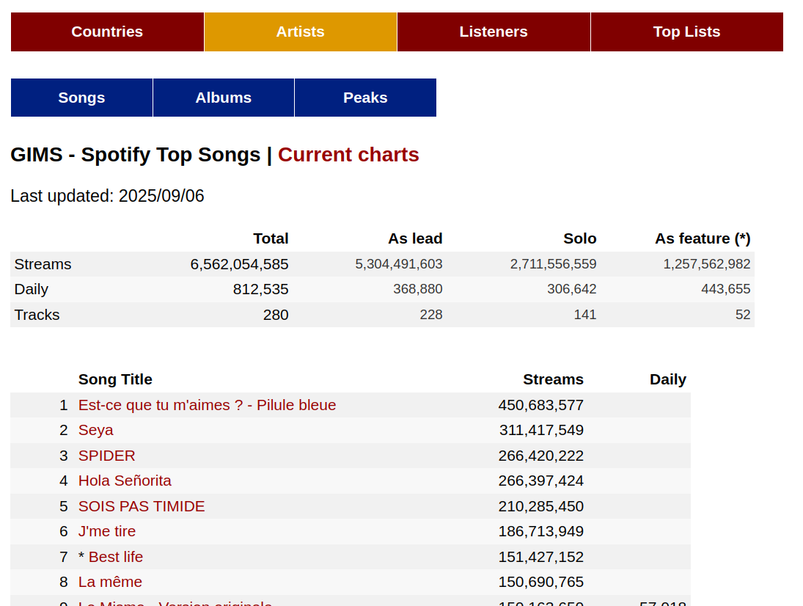
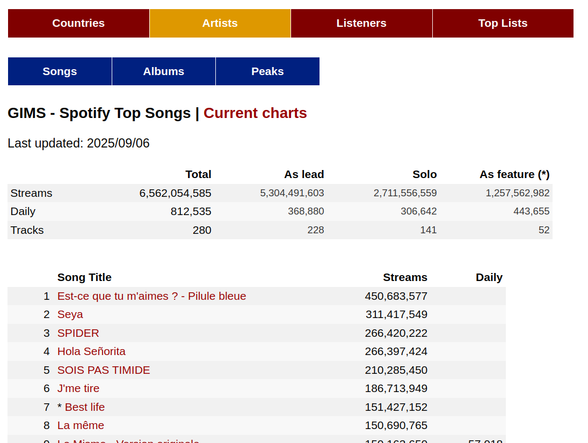
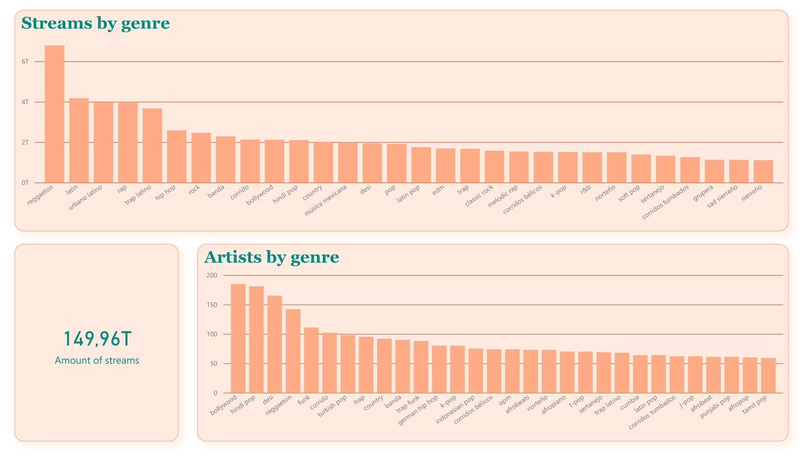
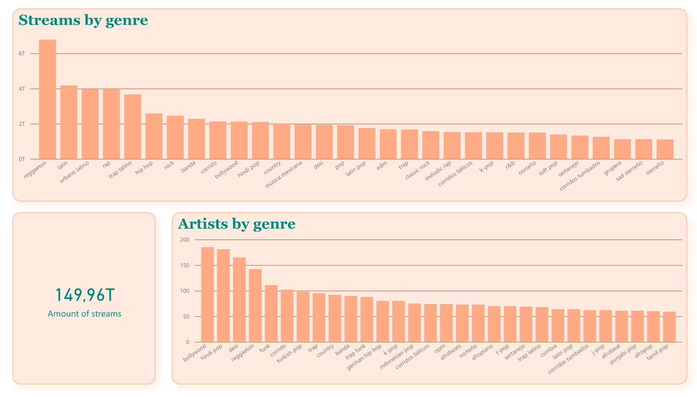
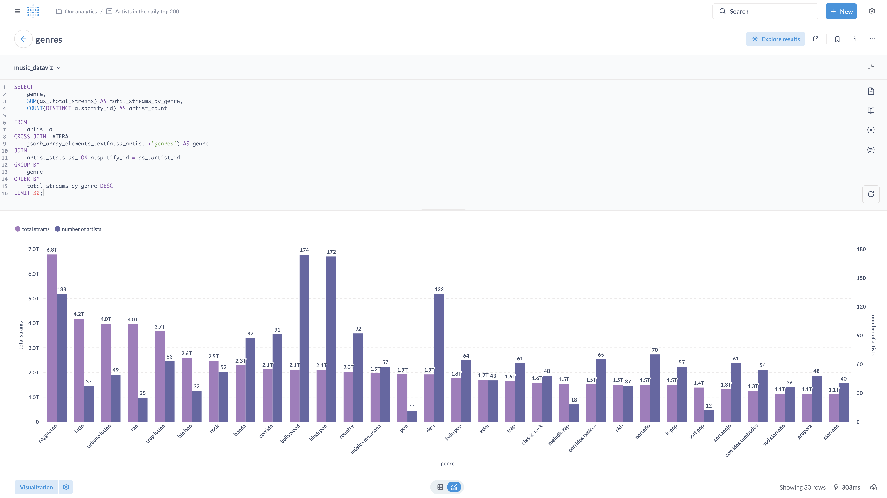
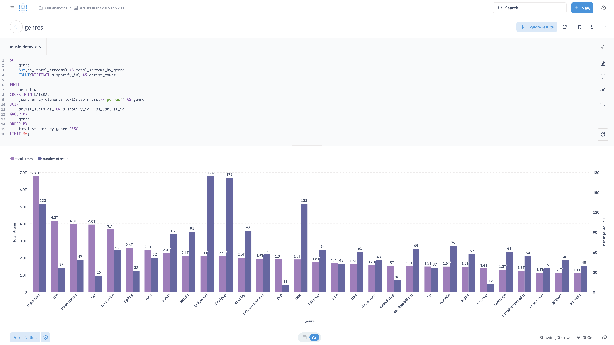

Navigation


Projet scolaire de récolte et d'analyse de données.
Dans le cadre de ma formation, j'ai réalisé un projet d'analyse de données, avec un thème libre. Nous avons choisi d'analyser des données musicales, en récoltant des informations sur les artistes, leurs titres, et leur nombre d'écoutes quotidiennes et hebdomadaires, filtrables par pays. Nous avons pour cela utilisé Kworb, qui propose de multiples tableaux selon différentes plateformes.


 

Nous avons conçu nos algorithmes de récupération de données en Python avec BeautifulSoup, et nous avons stocké les données dans une base PostgreSQL, que nous avons fait fonctionner avec des conteneurs Docker. Pour les visuels, nous avons créé nos premiers tableaux de bord avec Microsoft Power BI, puis ajouté de nouveaux dashboards avec Metabase.
De plus, sur la période d'avril à juin 2025, une machine virtuelle exécutait les mêmes scripts afin de récolter un maximum de données, ce qui a permis de monter le total à environ 10 000 artistes pour 500 000 musiques. La machine virtuelle est maintenant éteinte, mais les scripts peuvent toujours être utilisés en local sur ce dépôt.
Voici les visuels sur Power BI :


 



Pour compléter nos tableaux de bord, nous avons ajouté une deuxième source de données, provenant du site AcousticBrainz, qui permet d'obtenir des informations musicales sur les morceaux : leur style ou leur genre, également triables par région. Nous avons aussi reproduit certains dashboards réalisés sur Power BI.
Voici les visuels sur Metabase :

 
